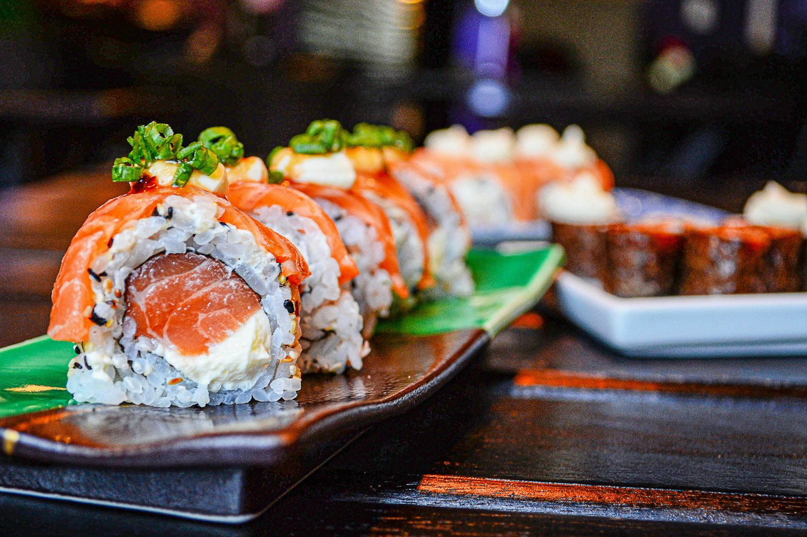

01
Salmão aburi
R$ 48Seis unidades, salmão levemente maçaricado, ponzu e cebolinha.
COZINHA JAPONESA · FEITA PARA COMPARTILHAR
Pequenos pratos. Grandes conversas. Uma cozinha que respeita o tempo, a estação e cada ingrediente.

01 — DA COZINHA PARA A MESAO balcão é o nosso ponto de encontro. Aqui, a precisão da cozinha japonesa encontra a liberdade de criar: peixe fresco, arroz no ponto e combinações que mudam com a estação.
Descubra o que preparamos para vocêVocê pode explorar categorias e detalhes. Nas vitrines com sacola, a seleção é apenas uma simulação: não há pagamento, pedido enviado ou cobrança.
Não. Esta é uma marca fictícia, criada para demonstrar o design e as possibilidades de um site. Produtos, cardápios e preços são ilustrativos.
Este modelo pode ser o ponto de partida. A Codik adapta estrutura, cores, conteúdo e funcionalidades para a sua marca.
Miso é uma marca fictícia. Este site é um conceito demonstrativo criado pela Codik.